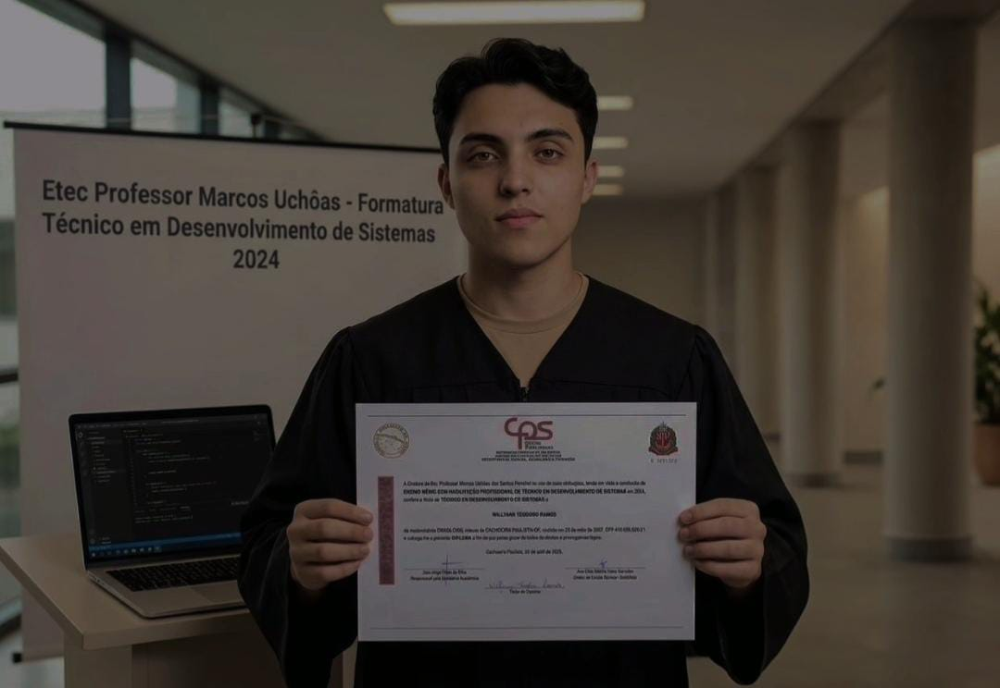

Olá, eu sou Willyann Teodoro Ramos
Técnico em Desenvolvimento de Sistemas | Estudante de Análise e Desenvolvimento de Sistemas
Sou profissional em formação na área de tecnologia, com formação técnica em Desenvolvimento de Sistemas concluída em 2024 e atualmente cursando Análise e Desenvolvimento de Sistemas.
Tenho interesse em desenvolvimento de software, programação, desenvolvimento Back-End e banco de dados.
Tecnologia, aprendizado e evolução profissional.
Esta imagem representa um pouco da minha trajetória e do meu desenvolvimento na área de tecnologia.
Ao longo da minha formação, venho buscando transformar conhecimentos em experiências práticas, desenvolvendo projetos e ampliando minhas habilidades em programação, Back-End e banco de dados.

Tecnologia, aprendizado e desenvolvimento constante.
Meu nome é Willyann Teodoro Ramos. Sou Técnico em Desenvolvimento de Sistemas, formado em 2024 pela ETEC Marcos Uchôas dos Santos Penchel, e atualmente sou estudante de Análise e Desenvolvimento de Sistemas.
Minha formação técnica foi importante para construir minha base na área de tecnologia, proporcionando contato com programação, desenvolvimento de sistemas, banco de dados e conceitos relacionados à criação de soluções computacionais.
Atualmente, continuo aprimorando meus conhecimentos por meio da graduação, cursos, estudos individuais e projetos práticos.
Tenho especial interesse por desenvolvimento Back-End, programação, SQL e administração de bancos de dados .
Busco transformar conhecimento teórico em prática, desenvolvendo projetos que contribuam para minha evolução profissional e me permitam compreender cada vez melhor os desafios encontrados no mercado de tecnologia.
Formação e evolução profissional
Minha trajetória acadêmica reúne formação técnica, graduação e estudos voltados ao desenvolvimento de sistemas, programação e banco de dados.
Formação técnica concluída em 2024 pela ETEC Marcos Uchôas dos Santos Penchel , com formação voltada ao desenvolvimento de sistemas, programação, banco de dados e fundamentos da tecnologia da informação.
Atualmente curso graduação em Análise e Desenvolvimento de Sistemas , ampliando meus conhecimentos em programação, engenharia de software, banco de dados e desenvolvimento de sistemas.
Possuo conhecimentos em SQL e MySQL, incluindo criação e gerenciamento de tabelas, consultas, inserção e manipulação de dados, relacionamentos, chaves e integração entre aplicações e banco de dados.
Tenho contato com linguagens e tecnologias como Java, Python, PHP, HTML, CSS, JavaScript e Node.js , buscando fortalecer principalmente meus conhecimentos em desenvolvimento Back-End.
Utilizo ferramentas como DBeaver, MySQL, Git, GitHub, Docker e WSL em estudos e projetos, buscando desenvolver uma visão prática sobre desenvolvimento e gerenciamento de sistemas.
Conhecimento técnico aliado à vontade de aprender.
Estou construindo minha carreira na área de tecnologia com foco no aprendizado contínuo e na aplicação prática dos conhecimentos adquiridos durante minha formação.
Entre meus principais pontos de interesse estão o desenvolvimento Back-End, banco de dados, SQL, programação e desenvolvimento de sistemas .
Também valorizo organização, responsabilidade, capacidade de aprendizado, trabalho em equipe e disposição para enfrentar novos desafios.
Construindo minha carreira na área de tecnologia.
Meu objetivo profissional é conquistar uma oportunidade na área de tecnologia onde eu possa aplicar os conhecimentos adquiridos durante minha formação técnica e graduação, desenvolver novas competências e adquirir experiência profissional.
Tenho interesse principalmente em oportunidades como Desenvolvedor Back-End, Desenvolvedor de Software, DBA Júnior ou Analista de Sistemas .
Quero fazer parte de uma equipe onde possa aprender, colaborar, assumir novos desafios e contribuir para a criação de soluções eficientes e de qualidade.